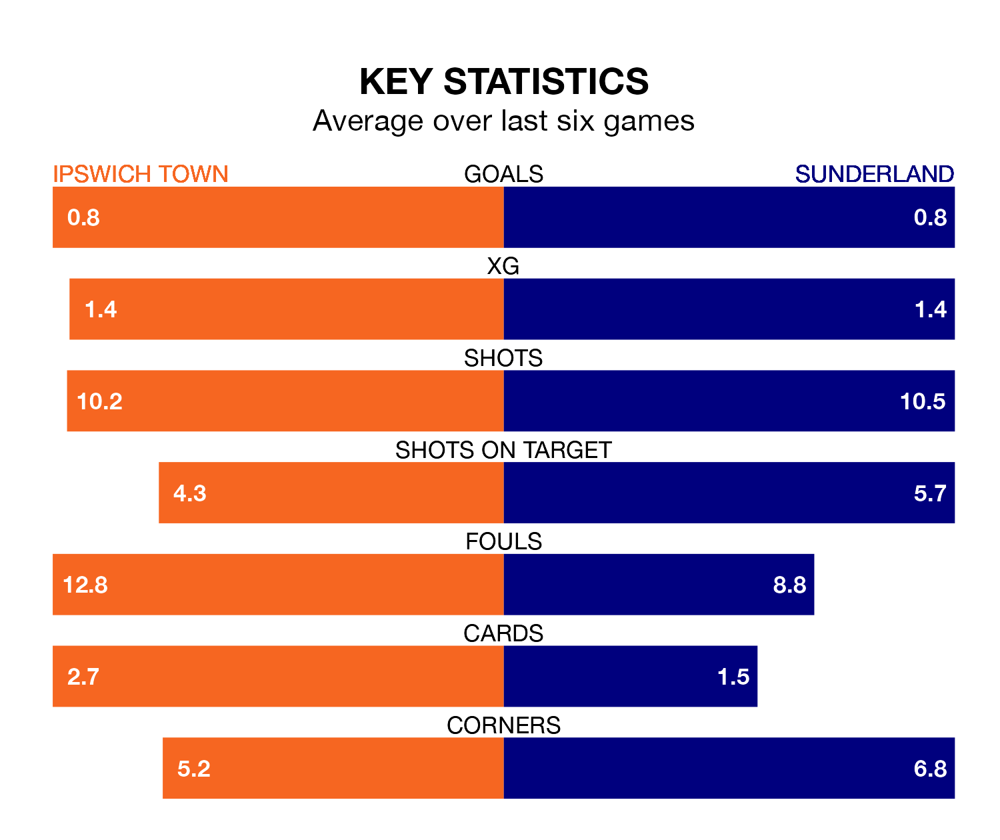

Ipswich Town face a challenge to maintain their high-scoring form at home against a tight Sunderland defence on Saturday.
With 48 goals in 26 games, Ipswich are the second-highest scorers in the Championship ahead of the 5.30pm kick-off at Portman Road.
They face a Black Cats side who have scored 36 in 26 matches, but conceded only 28 goals, putting them joint-fourth among the league's tightest defences – only Leicester City, Leeds United and West Bromwich Albion have conceded fewer goals.
Ipswich are second in the table after 26 games, of which they have won 16 and drawn seven, earning 55 points.
Sunderland are four places behind Town in sixth, with 12 wins and four draws putting them on 40 points.
In Václav Hladký, the Blues can rely on one of the league's safest pair of hands. He has kept nine clean sheets in his 26 appearances this season, and only one other 'keeper – West Bromwich Albion's Alex Palmer – has been able to prevent the opposition scoring on more occasions in the Championship.
In the Black Cats' net, Anthony Patterson has eight clean sheets in 26 games.
In the last five years, Ipswich and Sunderland have played each other on seven occasions. Ipswich won one of them, Sunderland four, and they drew twice.
On average, the Blues scored 0.7 goals and the Black Cats 1.3 in those matches.
Their last meeting was on August 6, when Ipswich won 2-1 away.
The hosts are in mixed form in the Championship, with one win and four draws from their last six games.
With three wins and a draw over that period, the away side's form is better – they have taken 10 points from 18, compared to Ipswich's seven.
Ipswich's last match was on January 1, a 0-0 draw against Stoke City.
Sunderland beat Preston North End 2-0 last time out, also on January 1, with Alex Pritchard and Nazariy Rusyn on the scoresheet.
Updated: 10:36, 03/01/24